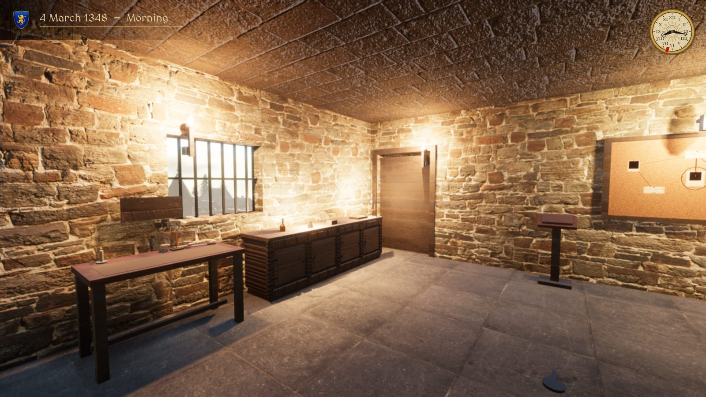
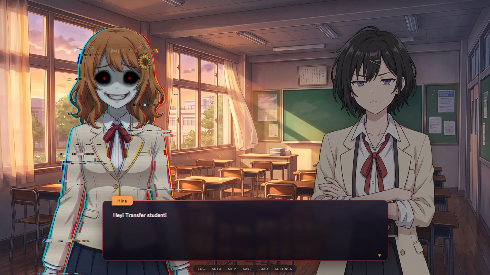
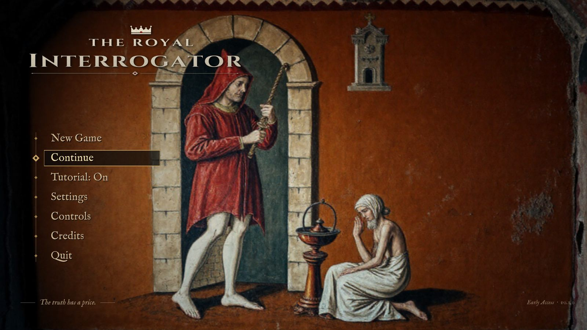
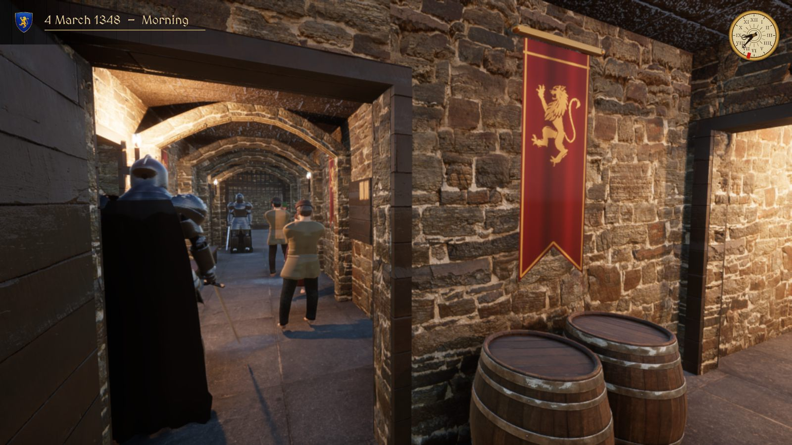
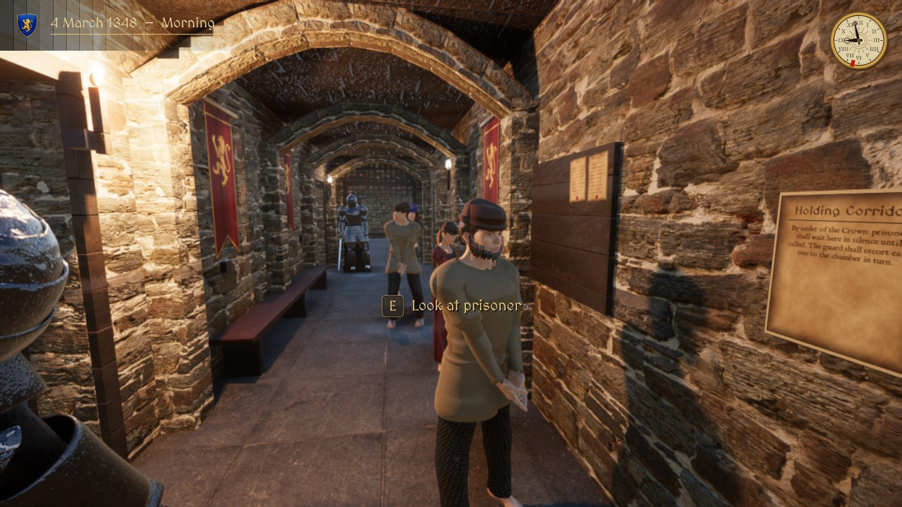
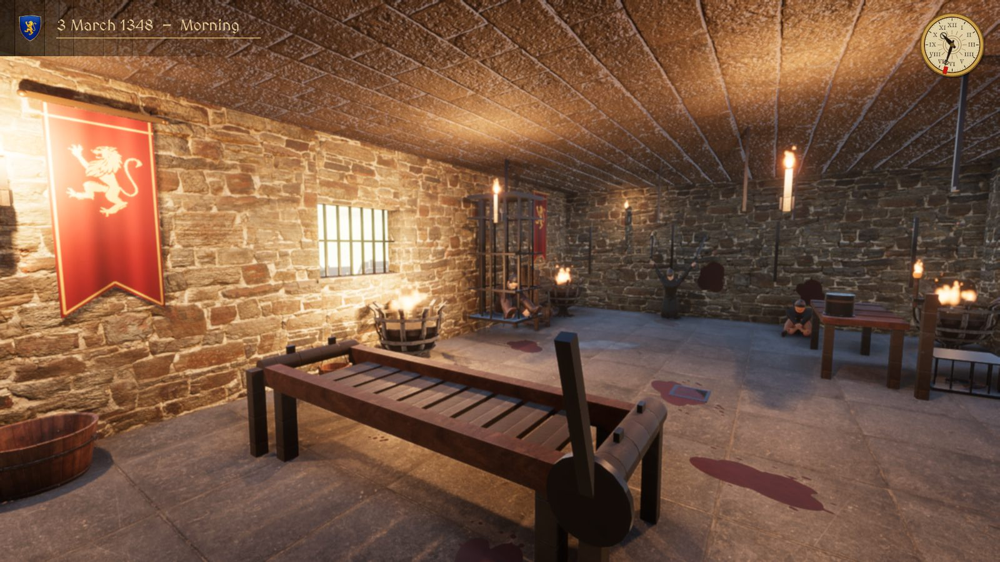
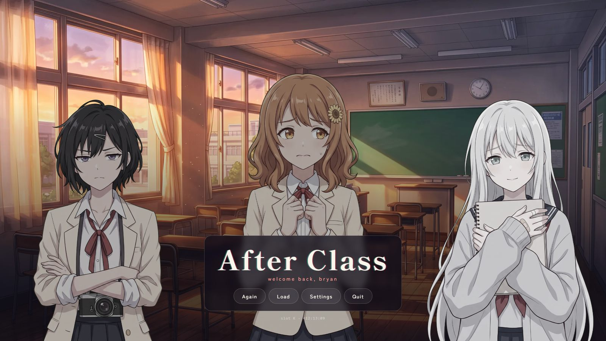
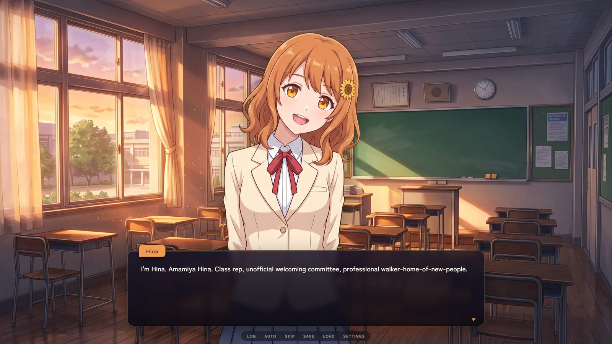
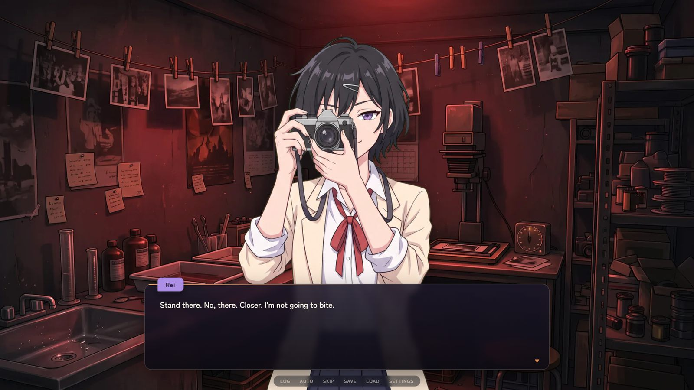
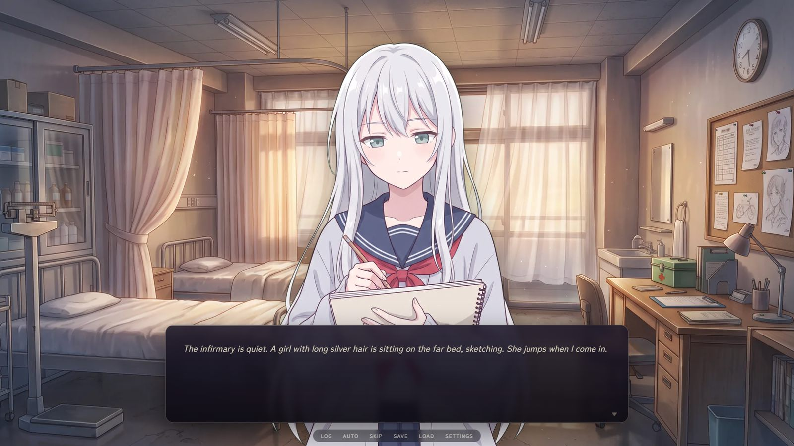

Unity · Early AccessRoyal Interrogator
JavaScript · ElectronAfter ClassBryan Lee · Founder, Stagworks
Games that pay attention
to the player.
I design, write and build games end to end, and I bring the same rigour from software engineering at EY and business analysis at FPT Software.
01 · Unity HDRP · C# · Windows
Royal Interrogator
Question, search and judge the prisoners of a medieval dungeon, and uncover a plot against the king.
Each morning the guards line up a new queue. Read the ledger, hold every answer up against the evidence on your desk, search prisoners for tattoos and hidden blades, then decide who is lying and what they deserve. Every verdict shifts the king's favour, the people's trust and four watching factions.
- 21days
- 60+prisoners
- 8endings
- 7chapters
My roleSolo developer: design, writing, C# systems, level building, and an asset pipeline in Blender, MakeHuman, Mixamo and Python.




02 · JavaScript · Electron · Web & Windows
After Class
A dating sim about the last week before summer. Summer never comes.
It starts as a sincere romance: three classmates, five afternoons, and a school PA system that keeps the week looping. On the second playthrough the girls remember, and the game starts noticing you: your real clock, your tab-outs, your cursor, and files that appear next to the .exe.
- 3routes
- 3endings
- 20+meta tricks
- 1–2hours
My roleSolo developer: story and script, a custom branching dialogue engine in vanilla JS, procedural music, a speaking PA voice, and an Electron desktop build.
Content warning: flashing lights, glitch effects, sudden loud sounds.




Experience
Where I've built things
-
Sep 2026 – Present
Founder & Game Developer · Stagworks
Founded an independent studio and shipped two commercial PC games on itch.io as sole developer, from design and code to builds, storefronts and release.
-
Aug 2025 – Jan 2026
Technology Consultant, Software Engineering · EY
Built OutSystems features for the SkillsFuture SG Tuition Grant System, optimised Oracle SQL, and automated DEV-to-UAT testing in Katalon and Postman, saving about 2 hours per run.
-
Apr 2024 – Aug 2024
IT Business Analyst · FPT Software
FPT Intern of the Year 2024, picked from 30 interns. Shaped APPRO, a loan and card processing platform, and automated Excel processing to cut turnaround by 80%.
-
Jan 2024 – Dec 2026
BSc Business Analytics, Minor in Data Science · SUSS
CGPA 4.03 / 5.00, on track for Honours (Distinction). Final-year project: an XGBoost portfolio framework predicting 5-day returns.
Projects
Other things I've made
ANL488 Portfolio Dashboard
Interactive dashboard comparing XGBoost, Ridge and Random Forest investment strategies.
Live site ↗ React · Node.jsPet Adoption App
Search and adopt pets, with sign-in, breed and age filters, and a favourites list.
GitHub ↗ Mobile · UX designBusmate
A mobile app design that learns your bus routes from your work schedule, workplace and home.
GitHub ↗ SimulationGame of Life
Conway's cellular automaton with an interactive grid and generation-by-generation playback.
GitHub ↗Toolkit
What I work with
Games
Unity · C# · HDRP · Blender · Electron · Narrative design
Engineering
JavaScript · Python · C · SQL · OutSystems · React · Node.js
Data & delivery
Machine learning · Data modelling · Postman · Katalon · Jira · Agile